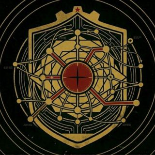
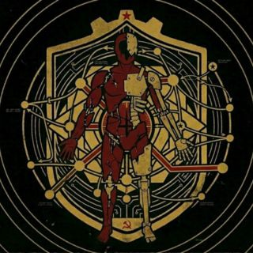
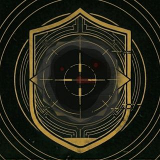

A finales de la década de los ochenta, la Unión Soviética proyectaba hacia el exterior una imagen de cohesión que no correspondía con su funcionamiento interno. Las reformas implementadas no lograron estabilizar el Estado; al contrario, lo fragmentaron. La acumulación de crisis económicas, los conflictos políticos irresueltos y el desgaste progresivo de las estructuras militares dejaron un sistema que había dejado de responder como un cuerpo único. Los mandatos se contradecían entre sí. Las regiones operaban de forma autónoma. El centro perdió autoridad real.
En ese contexto de fractura estructural, fondos, equipamiento y recursos humanos comenzaron a desaparecer de los registros oficiales. No por negligencia administrativa, sino por diseño deliberado. Capital estatal fue derivado hacia programas clandestinos, operados desde instalaciones que no figuraban en ningún documento de acceso público: laboratorios subterráneos, centros de prueba aislados, complejos que respondían únicamente a estructuras de mando no reconocidas.
Los archivos recuperados de dichas instalaciones describen líneas de investigación sin precedente documentado: manipulación del flujo temporal, alteración gravitacional localizada, generación de portales de carácter experimental, interacción con formas de materia y energía sin categorización conocida. Los propósitos declarados internamente no eran defensivos. Eran exploratorios, y algunos fragmentos sugieren intenciones que van más allá de esa denominación.
Las pruebas no se circunscribieron a simulaciones. Se emplearon sujetos reales: personal militar reasignado sin notificación, prisioneros transferidos sin registro documental, civiles sin expediente oficial. Los protocolos de seguridad y supervisión ética eran inexistentes. Los resultados fueron inconsistentes: algunos procedimientos fallaban de forma inmediata; otros generaban efectos que los propios investigadores no disponían de lenguaje técnico para describir.
"la señal regresa antes de ser enviada"
"el espacio no coincide con la ubicación registrada"
Durante el desarrollo de las pruebas comenzaron a registrarse objetos con propiedades imposibles de clasificar. Algunos fueron producidos en los propios laboratorios como resultado de los experimentos. Otros sencillamente aparecieron, sin origen rastreable, sin figurar en ningún inventario previo. Alteraban el entorno próximo, emitían energía de manera irregular y su comportamiento no era reproducible bajo condiciones idénticas. Los intentos de contenerlos o de analizarlos de forma sistemática fracasaron de modo consistente.
A medida que el Estado continuaba su proceso de debilitamiento, fragmentos de información comenzaron a filtrarse hacia circuitos externos. Testimonios aislados. Registros incompletos. Ninguno fue confirmado por ningún organismo oficial. Pero todos apuntaban en la misma dirección: había proyectos activos que no debían seguir estándolo.
No existe confirmación de que la totalidad de los proyectos fuera desactivada antes del 19/08/1991.
Los archivos disponibles sugieren lo contrario.
No hubo una detonación. No existió una señal única que desencadenara la secuencia. Lo que ocurrió en esa madrugada fue una superposición: múltiples instalaciones registraron actividad simultánea dentro de un margen de segundos, sin que ninguna de ellas hubiera recibido una instrucción común. Los canales de comunicación fallaron. Un protocolo sin denominación oficial se activó de manera autónoma. Y a partir de ese momento, la cadena causal dejó de tener orden lineal.
Los sistemas de contención no cedieron todos a la vez ni bajo las mismas condiciones. Lo que falló primero no fue la tecnología. Fue la referencia. Los registros de ese intervalo describen instrumentos que dejaron de corresponderse con su entorno, lecturas que no coincidían con ninguna ubicación reconocible, y una puerta que nadie había accionado y que, aparentemente, nunca había estado realmente cerrada.
"la puerta no estaba cerrada" >> DATO SIGUIENTE: IRRECUPERABLE
Lo que se manifestó esa noche no fue ni una explosión ni una implosión en el sentido convencional. Los registros visuales disponibles muestran distorsión del espacio inmediato, fragmentación de estructuras físicas, objetos que desaparecen de forma parcial mientras el entorno que los rodeaba permanece intacto. No hubo expansión observable. Hubo apertura.
El personal presente en el momento del Evento no falleció por causas convencionales. Algunos desaparecieron sin registro. Otros reaparecieron en ubicaciones distintas a las registradas, sin explicación sobre el mecanismo de desplazamiento. Varios presentaron deterioro físico sin causa directa identificable, pérdida parcial de identidad, desorientación de carácter irreversible.
Tras el Evento, el área afectada no colapsó. Se estabilizó de forma anómala. Las alteraciones no se detuvieron ni se propagaron de golpe; lo hicieron de manera gradual, irregular e impredecible. Gravedad inconsistente. Desplazamientos sin trayectoria. Repetición de eventos. Sonidos sin origen identificable. Portales inestables que conectaban con ubicaciones descritas en los registros como "el mismo lugar, pero no en el mismo estado".
Los mapas dejaron de ser operativos. Las coordenadas dejaron de coincidir con la realidad física. Se detectaron señales emitidas antes del Evento, actividad en instalaciones ya destruidas, transmisiones que se repetían sin fuente activa identificable.
// HIPÓTESIS VIGENTE: "INTERFERENCIA EN ESTRUCTURA BASE"
// ORIGEN: DESCONOCIDO
Una vez confirmada la naturaleza del fenómeno, el área fue designada oficialmente como ZONA y sometida a cierre total del perímetro exterior. La Zona opera de manera completamente separada del mundo exterior. El acceso está prohibido sin autorización expresa, y se ordena apertura de fuego sobre cualquier presencia sospechosa detectada en las proximidades del muro. La salida igualmente está vedada sin procedimiento establecido.
>> ERROR ACCEDIENDO A: PROYECTOS_ACTIVOS >> ACCESO DENEGADO — BLOQUEO EXTERNO >> FIRMA: [NO REGISTRADA]El contenido de este registro ha sido alterado por un usuario que no figura en el directorio del sistema.
Semanas después del 19/08/1991, desde Moscú se tomó una decisión que nunca fue comunicada al público. El perímetro de la ciudad y sus zonas adyacentes fue sellado. No como medida provisional, sino como protocolo de duración indefinida ante un fenómeno sin precedente operativo y sin clasificación vigente.
La Direktsiya es el instrumento ejecutor de ese cierre. No surgió como una unidad de nueva creación; fue reconfigura a partir de estructuras militares preexistentes, redirigidas al perímetro con un mandato concreto: contener la expansión, supervisar el acceso, neutralizar amenazas internas. Sin margen para la interpretación libre. Sin espacio para la incertidumbre.
Operan con cadena de mando vigente y logística funcional. Puestos de control en vías de acceso, unidades desplegadas por sectores, zonas seguras establecidas en puntos estratégicos. Todo desplazamiento dentro del perímetro queda registrado. Todo incidente queda consignado. La maquinaria burocrática militar sigue en marcha aunque el entorno que rodea sus posiciones carezca de explicación racional.
La Zona es tratada como un fenómeno físico de origen desconocido. Eso es todo lo que la Direktsiya necesita para operar. No investigan su naturaleza ni contemplan explicaciones que no puedan medirse o acotarse. Lo que no se comprende, se delimita. Lo que no puede delimitarse, se neutraliza.
Su relación con el resto de facciones es de autoridad unilateral. No negocian presencia no autorizada. No toleran actividad que interfiera con el perímetro o con sus operaciones internas. La coordinación con el Otdel Nauki existe, pero es tensa y está condicionada únicamente por los términos que la Direktsiya impone.
- Estructura militar estándar con cadena de mando operativa
- Presencia permanente en perímetro exterior y sectores internos
- Registro sistemático de toda actividad dentro de la Zona
- Intervención directa ante presencia o actividad no autorizada
- Tolerancia mínima frente a facciones no reconocidas oficialmente
No llegaron a la Zona con un propósito definido. Cada uno llegó por separado, en momentos distintos, por razones que ninguno comparte con facilidad. Lo que los cohesiona no es una ideología ni una estructura de mando. Es el tiempo suficiente dentro del perímetro como para haber comprendido algo que ninguna otra facción parece estar dispuesta a aceptar.
La Zona tiene una lógica propia. No es aleatoria. No es caótica en el sentido que otros asumen. Tiene patrones. Regularidades que no corresponden a la física convencional, pero que se repiten con consistencia suficiente como para ser interpretadas. El Vektor lleva tiempo leyéndolas.
Corrientes de aire que se modifican antes de que una anomalía se active. Variaciones de presión que indican inestabilidad en sectores concretos. Alteraciones perceptibles en el entorno que funcionan como advertencia para quienes saben leerlas. Para el Vektor, son datos. Para el resto, son ruido de fondo.
Se han documentado casos de miembros que anticipan la manifestación de anomalías antes de que sean detectables por cualquier instrumento disponible. Que atraviesan zonas marcadas como inestables sin incidentes registrados. Que aparecen en ubicaciones sin rutas de acceso identificadas. No se ha determinado si esto obedece a experiencia acumulada, a una capacidad perceptiva desarrollada por exposición prolongada, o a algo que esa misma exposición produjo en ellos.
- Sin jerarquía formal ni estructura organizativa visible
- Desplazamiento basado en lectura directa del entorno, no en cartografía
- Uso activo de anomalías como cobertura, barrera o vía de tránsito
- Hostiles ante cualquier intento de control externo
- Prácticamente imposibles de rastrear de forma continua

Después del Evento, la Zona quedó repleta de objetos que el mundo exterior todavía no tiene forma de nombrar. Equipamiento abandonado en instalaciones que nunca tuvieron un cierre formal. Suministros en edificios que llevan meses sin personal. Información que alguien, en algún lugar, pagaría por obtener. El Peredel existe porque hay demanda.
No es una organización. No tiene liderazgo central ni estructura reconocible. Es una red informal de individuos y grupos reducidos que operan dentro del perímetro con un objetivo que varía pero se mantiene constante en su lógica: entrar, obtener lo que sea posible, salir. O al menos intentarlo.
Su composición es fluida. Hay comerciantes que intercambian objetos y suministros entre facciones o con contactos fuera del perímetro. Hay saqueadores que trabajan solos y no preguntan sobre el origen de lo que encuentran. Hay exploradores que cartografían sectores desconocidos por encargo o por cuenta propia. Hay informantes que venden lo que saben al primero que pague. Ninguno responde al otro.
- Red informal sin jerarquía ni estructura centralizada
- Alta rotación de miembros por desapariciones frecuentes
- Conocimiento del terreno superior al de cualquier otra facción
- Sin alianzas permanentes — cooperación o conflicto según contexto
- Fuente primaria de suministros e información para quien pueda pagar

No existe un momento preciso en que alguien decide convertirse en Izlom. Hay un proceso. Gradual. Irreversible. Y cuando el resto lo percibe, el punto de retorno ya ha quedado atrás.
El Izlom no es una facción en el sentido convencional. No tiene fundadores, ni doctrina, ni objetivos colectivos. Es la denominación que las demás facciones usan para referirse a quienes la exposición prolongada a la Zona transformó más allá del umbral en que el organismo puede recuperarse por sí solo.
Mutaciones progresivas. Disfunciones orgánicas recurrentes. Enfermedades sin categoría conocida. Inestabilidad neurológica que se manifiesta de formas distintas en cada caso. Algunos perdieron la capacidad de procesar el entorno de forma convencional. Otros simplemente dejaron de asemejarse a lo que eran antes de entrar al perímetro.
Frente a eso, algunos optaron por adaptarse con los medios disponibles: metal integrado al cuerpo para reemplazar lo que había fallado, piezas mecánicas utilizadas como extensiones físicas, modificaciones improvisadas orientadas a mantener la funcionalidad cuando el tejido orgánico propio ya no era suficiente. No fue una elección estética. Fue necesidad.
- Alteraciones físicas severas, progresivas e irreversibles
- Agrupación ocasional sin estructura ni objetivo compartido
- Presencia en zonas marginales e inestables del perímetro
- Comportamiento ante contacto externo: impredecible
- Sin registro de reversión — esperanza de vida no calculable

No figura en ningún archivo estatal. No aparece en la documentación vinculada a los proyectos previos al Evento. No ha establecido contacto directo con ninguna facción conocida. No existe registro de su fundación, composición o estructura interna.
Y sin embargo, su nombre aparece.
Aparece en fragmentos de registros procedentes de fuentes distintas, en momentos diferentes, sin coordinación aparente entre ellos. Testimonios indirectos que describen individuos o grupos reducidos que permanecen en una ubicación durante períodos muy breves antes de desaparecer, siempre antes de que cualquier seguimiento pueda establecerse.

El Evento no produjo únicamente anomalías. Generó preguntas que nadie con acceso a los recursos adecuados ha podido responder. El Otdel Nauki lleva meses intentándolo con lo que tiene disponible, que no es mucho.
No son una institución estatal. No responden a Moscú ni a ningún organismo con presencia fuera del perímetro. Son lo que quedó cuando el sistema colapsó y algunos de los que trabajaban dentro de él decidieron no marcharse, o simplemente no pudieron hacerlo.
Científicos. Técnicos. Investigadores. Personas que se encontraban en instalaciones próximas al Evento cuando ocurrió, o que entraron después con el objetivo de comprender qué había sucedido y no encontraron la salida antes de que el perímetro se cerrara. Algunos eligieron quedarse. La diferencia entre ambos grupos importa menos de lo que parece cuando el trabajo a realizar es el mismo.
Su relación con la Direktsiya es funcional pero tensa. La Direktsiya necesita información que solo el Otdel Nauki puede generar. El Otdel Nauki necesita protección y suministros que solo la Direktsiya distribuye. Ninguno confía completamente en el otro. Ambos lo saben y operan dentro de ese límite sin resolverlo.
- Asentamiento fijo en instalaciones recuperadas dentro del perímetro
- Documentación sistemática de anomalías y patrones
- Intercambio de información por suministros o protección
- Relación tensa pero operativa con la Direktsiya
- Objetivo central: comprender la naturaleza del Evento
Los mutantes conservan una base humanoide, pero presentan deformaciones severas tanto en la superficie como en el funcionamiento interno. Las alteraciones registradas incluyen crecimiento anormal de hueso y tejido, distorsión de extremidades, deformación craneal y facial, y el desarrollo de estructuras sin identificación posible. La apariencia varía entre sujetos; no existen dos casos documentados idénticos.
El cuerpo permanece funcional. No se considera muerte clínica. Sin embargo, los procesos fisiológicos normales están alterados o reemplazados por mecanismos de origen desconocido. Se desconoce hasta qué punto el individuo original permanece consciente de alguna forma.
- Agresividad marcada en la mayoría de los casos registrados
- Respuesta activa a estímulos visuales y de movimiento
- Tendencia a aproximarse a estructuras habitadas
- Algunos muestran persistencia en objetivos — comportamiento no completamente instintivo
La transformación no es instantánea. Se produce de forma progresiva tras exposición prolongada. No se ha registrado ningún caso de reversión.
- Evitar contacto directo bajo cualquier circunstancia
- No permitir aproximación a zonas seguras establecidas
- Neutralización autorizada en situaciones de riesgo

Cuerpos humanos sin actividad vital autónoma que presentan descomposición parcial o avanzada. El movimiento observado no corresponde a funciones biológicas normales y es inducido por un agente externo no completamente identificado.
Se presume la existencia de una entidad parasitaria que utiliza el sistema nervioso residual como interfaz. Este agente controla la actividad motora básica y el desplazamiento. No siempre es visible ni detectable.
- Desplazamiento lento, irregular y mecánico
- Atracción hacia organismos vivos
- Intentos de acceso a estructuras cerradas
- Ausencia total de respuesta al dolor
El daño físico severo no garantiza la neutralización. Se ha registrado actividad persistente incluso tras pérdida significativa de integridad estructural.
- Evitar contacto directo
- No permitir ingreso a zonas seguras
- Neutralización solo si es estrictamente necesario

Presencias de gran magnitud que se manifiestan de forma irregular dentro del perímetro. No responden a patrones biológicos conocidos. Su forma, estructura y comportamiento son inconsistentes o directamente imposibles bajo condiciones físicas normales.
Algunas manifestaciones presentan aparente solidez; otras parecen incompletas o parcialmente fuera de fase. No existe una morfología estándar. Cada registro difiere completamente del anterior.
- Alteraciones gravitacionales localizadas
- Distorsión visual y geométrica del espacio
- Fallos de percepción (profundidad, distancia)
- Interferencia en sistemas electrónicos y ópticos
Se han identificado zonas donde la realidad permanece alterada incluso tras la desaparición de la entidad.
No se ha confirmado intención consciente. Sin embargo, los encuentros han resultado en desapariciones, desintegración parcial o total, y pérdida de coherencia cognitiva. Algunos sujetos reportan la sensación de haber sido observados.
No pueden ser neutralizadas.
No pueden ser comprendidas completamente.
- No establecer contacto visual prolongado
- Evacuación inmediata del área de manifestación
- No intentar registro directo sin autorización
Criaturas de tamaño medio con rasgos animales deformados. Presentan estructuras corporales adaptadas al desgarro y consumo de materia orgánica en descomposición.
- Evitan confrontación directa
- Operan en grupos reducidos
- Mantienen distancia de amenazas mayores
- Se activan ante inmovilidad prolongada
Su presencia sugiere muerte reciente o baja actividad de depredadores superiores en la zona.
- No simular inmovilidad prolongada
- Evitar quedar aislado o herido
- Dispersión suficiente para neutralización

Presencias oscuras que se adhieren a superficies. No proyectan sombra: son la sombra. Su forma cambia constantemente, sin mantener una geometría definida.
- Sensación persistente de observación
- Distorsión temporal durante exposición
- Pérdida de enfoque visual progresiva
No siempre atacan directamente. Se han registrado desapariciones en espacios cerrados, pérdida de memoria y alteraciones conductuales severas.
- Evitar contacto visual prolongado
- No permanecer en espacios cerrados
- Abandonar el área ante movimiento anómalo

Especies animales conocidas alteradas físicamente por exposición a la Zona. Presentan aumento de masa, deformaciones óseas y adaptaciones ofensivas.
- Instinto de caza intensificado
- Actividad en manadas coordinadas
- Territorialidad agresiva
- Alta velocidad y resistencia
- Ausencia de miedo hacia humanos
Conservan patrones animales reconocibles, pero amplificados y distorsionados.
- Evitar territorios marcados
- No interactuar con crías
- Evitar aislamiento en campo abierto
Criaturas con múltiples extremidades, exoesqueleto parcial o completo y estructuras bucales adaptadas. Algunas muestran fusión con tejido orgánico.
- Alta velocidad de reacción
- Operan en enjambres
- Ocupación de espacios cerrados
- Tácticas de rodeo
- Persistencia ante bajas
- Evitar espacios confinados
- No permitir rodeo
- Neutralizar focos de agrupación

Entidades que invaden organismos vivos o muertos y toman control total del sistema motor. El huésped pierde autonomía.
- Contacto directo
- Entrada por heridas abiertas
- Uso de cadáveres como vectores
| ID | TIPO | SECTOR | ESTADO | NIVEL | DATOS |
|---|